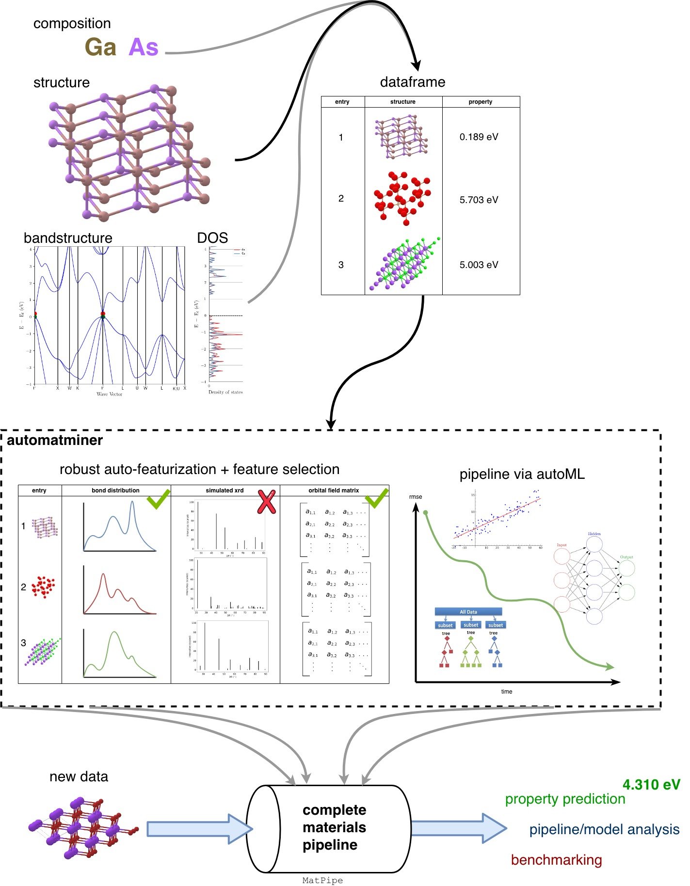

WARNING! These docs are incomplete. Read and use at your own risk!`
Automatminer is a tool for automatically creating complete machine learning pipelines for materials science, including automatic featurization with matminer, feature reduction, and an AutoML backend. Put in a materials dataset, get out a machine that predicts materials properties.
How it works¶
Automatminer automatically decorates a dataset using hundreds of descriptor techniques from matminer’s descriptor library, picks the most useful features for learning, and runs a separate AutoML pipeline using TPOT. Once a pipeline has been fit, it can be examined with skater’s interpretability tools, summarized in a text file, saved to disk, or used to make new predictions.
Here’s an example of training on known data, and extending the model to out of sample data.
from automatminer.pipeline import MatPipe
# Fit a pipeline to training data to predict band gap
pipe = MatPipe()
pipe.fit(train_df, "band gap")
# Predict bandgap of some unknown materials
predicted_df = pipe.predict(unknown_df, "band gap")
Or, run a (relatively) rigorous nested cross validation benchmark on a known dataset, and then compare the results against your own ML models:
from automatminer.pipeline import MatPipe
from sklearn.model_selection import KFold
pipe = MatPipe()
predictions_per_fold = pipe.benchmark(df, "bulk modulus", KFold(n_splits=5))
Scope¶
Automatminer can work with many kinds of data:¶
- both computational and experimental data
- small (~100 samples) to moderate (~100k samples) sized datasets
- crystalline datasets
- composition-only (i.e., unknown phases) datasets
- datasets containing electronic bandstructures or density of states
Many kinds of target properties:¶
- electronic
- mechanical
- thermodynamic
- any other kind of property
And many featurization (descriptor) techniques:¶
See matminer’s Table of Featurizers for a full (and growing) list.
Installation¶
Install from Pypi:
pip install automatminer
Clone latest code from github
git clone https://github.com/hackingmaterials/automatminer
cd automatminer
pip install -e .
Full Code Examples¶
This section is a work in progress; please stay tuned as we add more examples!
Benchmarking automatminer’s performance¶
Download matminer’s Elastic Tensor Dataset from 2015.
Citing automatminer¶
We are in the process of writing a paper for automatminer. In the meantime, please use the citation given in the matminer repo.
Contributing¶
Interested in contributing? See our contribution guidelines and make a pull request! Please submit questions, issues / bug reports, and all other communication through the matminer Google Group.